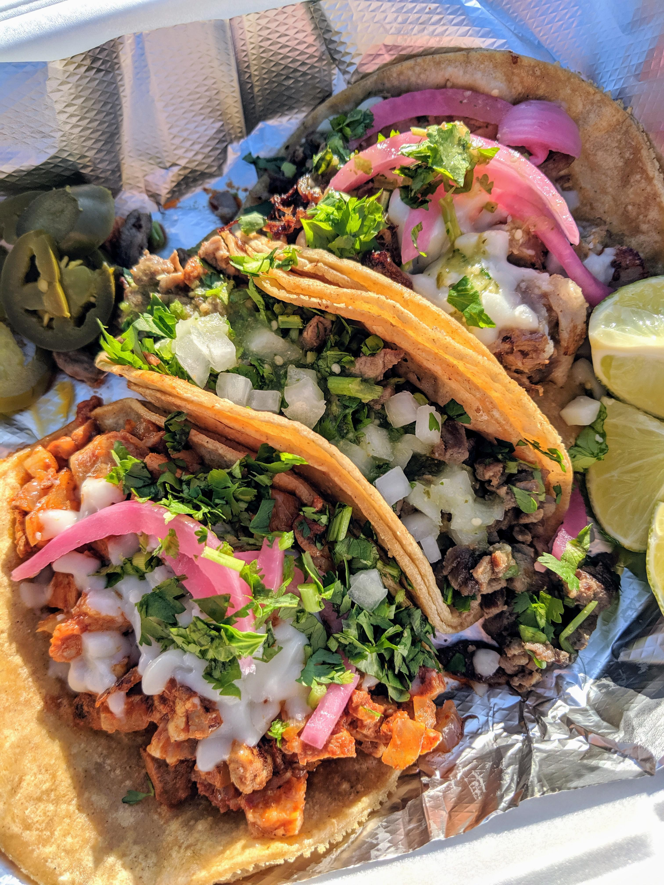

Tacos

Tacos are a very popular dish in Mexico
Tacos can be made from diferent kinds of fillings and also can be complemented with different topings or sauces
Ingridients
- Meat of your choice (If you want you can use vegetables a fillings)
- Tortillas
- Vegetables of your choices as dressing
- Sauces of your choices as topings
- Some lime and Salt to give the extra flavor
Steps
- heat the tortillas on a comal or you can heat them on the microware for 30 seconds
- fill the tortillas with the filling of your choice, wether it be meat of vegetables
- Put some dressings, it can be chopped cilantro and onions
- top the tacos with some salsa
- finally drop some lime and a little bit of salt